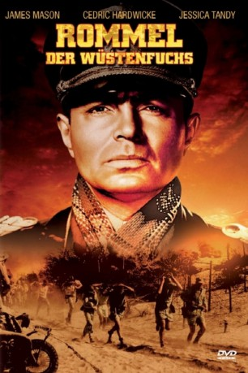

#2945 Rommel, der Wüstenfuchs
Alternativ: The Desert Fox: The Story of Rommel
 
 IMDB-Wertung: 7.0 / 10
IMDB-Wertung: 7.0 / 10  Metascore: 0
Metascore: 0 
Spielfilm, der das Leben des deuten Generals Erwin Rommel im Zeitraum des Zweiten Weltkriegs zum Thema hat. Die Handlung spielt im Raum von Lybien und Ägypten wo Rommel sich den Beinamen "Der Wüstenfuchs" erworben hat. Weiterhin wird Rommels Wirken bei der Heeresgruppe B an der Invasionsküste, und sein Tod im Zusammenhang mit dem Wiederstand der Männer des 20 Juli gegen Adolf Hitler angerissen.
Jahr: 1951
Dauer: 84 Minuten
FSK: 12
Land: USA Studio: Twentieth Century-Fox Film CorporationTonspuren: DD2.0 - ,
Untertitel: Englisch, Deutsch,
Auflösung: 1080p (1488x960) Größe: 5908 MB
Genre: Drama, Krieg, Biographie
Regisseur: Henry Hathaway
Drehbuch: Nunnally Johnson, Desmond Young
Soundtrack: Daniele Amfitheatrof
Darsteller:
 James Mason als Field Marshal Erwin Johannes Rommel
James Mason als Field Marshal Erwin Johannes Rommel- Cedric Hardwicke als Dr. Karl Strolin
 Jessica Tandy als Frau Lucie Marie Rommel
Jessica Tandy als Frau Lucie Marie Rommel- Luther Adler als Adolf Hitler
- Everett Sloane als Gen. Wilhelm Burgdorf
 Leo G. Carroll als Field Marshal Gerd von Rundstedt
Leo G. Carroll als Field Marshal Gerd von Rundstedt George Macready als Gen. Fritz Bayerlein
George Macready als Gen. Fritz Bayerlein Richard Boone als Capt. Hermann Aldinger
Richard Boone als Capt. Hermann Aldinger Eduard Franz als Col. Klaus von Stauffenberg
Eduard Franz als Col. Klaus von Stauffenberg- Paul Cavanagh als Lt. Col. Caesar von Hofaker , uncredited
 Dwight D. Eisenhower als Himself , archive footage, uncredited
Dwight D. Eisenhower als Himself , archive footage, uncredited- Scott Forbes als Commando Colonel , uncredited
 John Hoyt als Field Marshal Wilhelm Keitel , uncredited
John Hoyt als Field Marshal Wilhelm Keitel , uncredited George Lynn als German Lieutenant , uncredited
George Lynn als German Lieutenant , uncredited- George Nader als Commando , uncredited
 Dan O'Herlihy als Commando Captain , uncredited
Dan O'Herlihy als Commando Captain , uncredited- Michael Rennie als Narrator , uncredited
 Peter van Eyck als German Officer , uncredited
Peter van Eyck als German Officer , uncredited Carleton Young als German Staff Officer , uncredited
Carleton Young als German Staff Officer , uncredited- Desmond Young als Himself, Lt. Col. Desmond Young
- Philip Ahlm als German Soldier & Chauffeur , uncredited
- John Alderson als German Sergeant / Hospital Staffer , uncredited
- Jack Baston als Gen. Alfred Jodl , uncredited
- Robert Bohannon als Minor Role , uncredited
- Boyd Cabeen als Minor Role , uncredited
- Roland Carpenter als German Officer , uncredited
- Mary Carroll als Rommel's Maid , uncredited
 Steve Carruthers als Signal Man , uncredited
Steve Carruthers als Signal Man , uncredited- Pat Coleman als S.S. Man , uncredited
- Robert Coote als British Medical Officer , uncredited
- Eric Corrie als Commando , uncredited
- Ashley Cowan als New Zealand Soldier , uncredited
- Lawrence Cregar als German Guard , uncredited
- Fred Dale als Minor Role , uncredited
- Roy Damron als Minor Role , uncredited
- Charles Davis als Signal Man , uncredited
- Don De Leo als Maj. Gen. Ernst Maisel , uncredited
- Jack Deery als British Medic , uncredited
- Richard Elmore als Rommel's Driver in Africa , uncredited
- John Epper als British Medical Officer , uncredited
 Charles Evans als Gen. Schultz , uncredited
Charles Evans als Gen. Schultz , uncredited- Ray Flynn als German Major , uncredited
- Peter Forster als Commando , uncredited
- John Goldsworthy als Gen. Heinrich von Stulpnagel , uncredited
 Lumsden Hare als Doctor , uncredited
Lumsden Hare als Doctor , uncredited- Hal Hatfield als Minor Role , uncredited
- Gordon Heaver als Commando , uncredited
- George Hoagland als Minor Role , uncredited
 Stuart Holmes als German Staff Officer at Conference , uncredited
Stuart Holmes als German Staff Officer at Conference , uncredited- Robin Hughes als Medic , uncredited
Datei: X:\1950-1959\Rommel, der Wüstenfuchs (1951, FSK12, 1488x960).mkv seit 05.01.2016
Festplatte: HD 1900-1970
 Es gibt insgesamt 141 Filme in der Gruppe '1950-1959'
Es gibt insgesamt 141 Filme in der Gruppe '1950-1959'